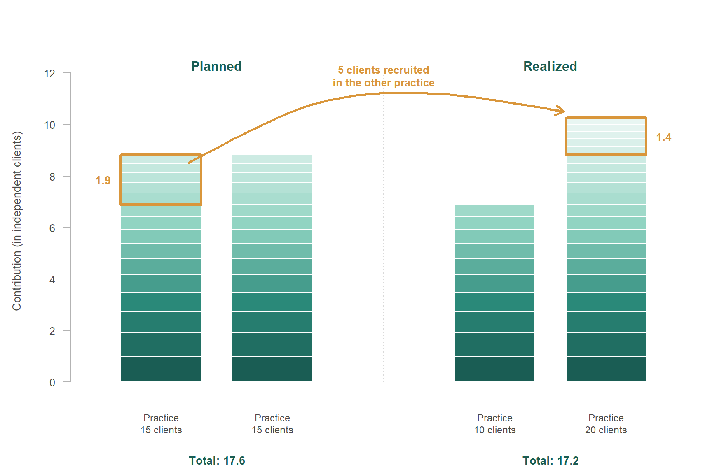
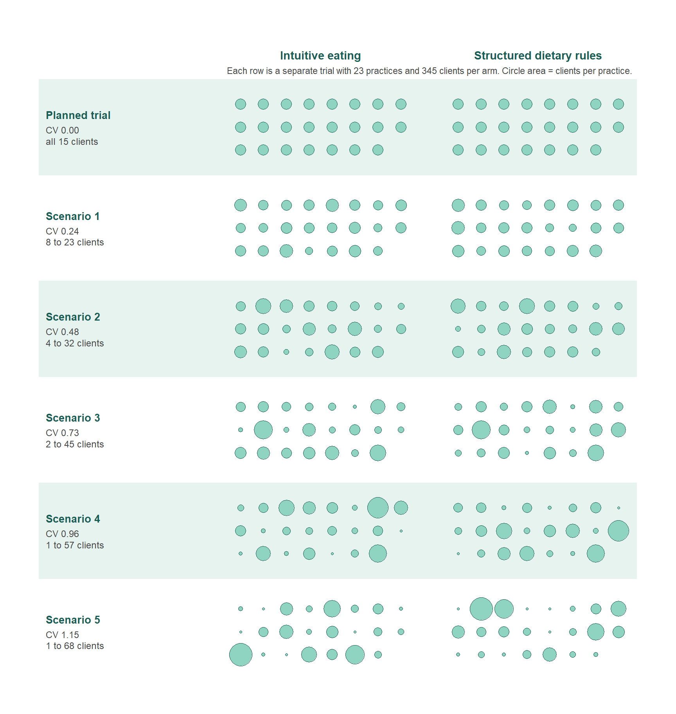
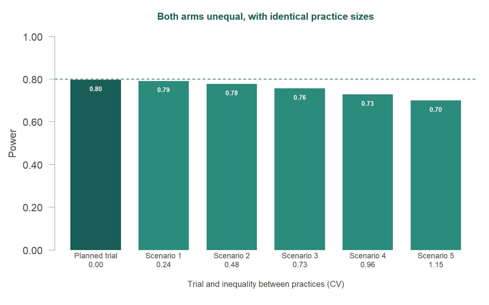
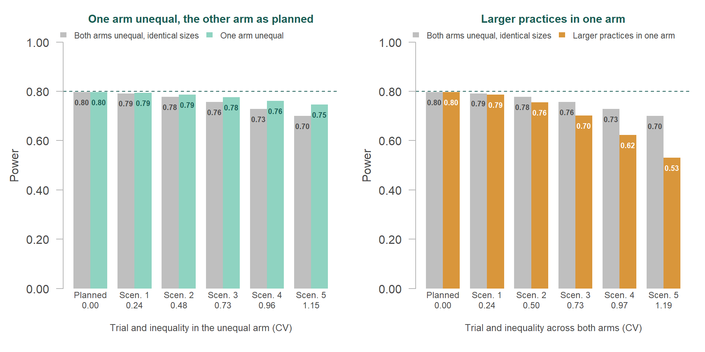
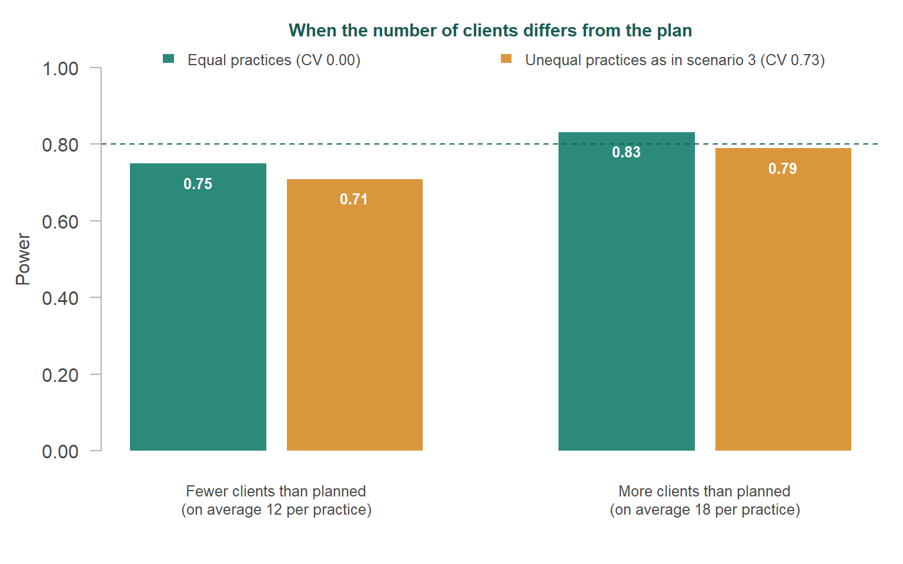

Sample size planning for clustered data – Part 2: When practices don’t recruit as planned
Your power analysis assumed 15 clients per practice. What happens to the power when some practices recruit 5 clients and others 30?
R
sample size
power analysis
multilevel
cluster size
Author
Xynthia Kavelaars
Published
October 28, 2026
⚖️ What if recruitment didn’t go as planned?
Your power analysis assumed 15 clients per practice. What happens to the power when some practices recruit 5 clients and others 30?
Before a study starts, the researcher has to decide how many participants to include, aiming to give the study a sufficiently high probability of detecting an effect, if that effect really exists. The researcher sets this probability - the statistical power - in advance, often at 0.80. In practice, power analysis is used for this: a calculation based on a series of educated guesses or assumptions about what the data will look like, such as the expected size of the effect. The researcher has to make these assumptions before any data are collected. When those assumptions turn out to be wrong, the study can end up with less power than the researcher intended, and therefore with a larger risk of missing an effect that does exist.
In many studies, the researcher does not recruit participants one by one but through groups. A clinical psychologist recruits clients through psychology practices, an educational researcher recruits pupils through schools, and a medical researcher recruits patients through hospitals. The data from such studies are clustered (or multilevel or nested) data, with the groups being clusters. Clustered data occur in many kinds of studies. This post focuses on trials in which the researcher randomizes whole clusters instead of individual participants. All participants within a cluster are then assigned to the same condition and receive the same intervention or treatment. Such trials are called cluster-randomized trials. Whether the researcher randomizes clusters or individual participants, the clustering has consequences for the power analysis. The researcher then has to make additional assumptions, and one of these assumptions is the subject of this post.
Equal clusters: the most favourable assumption
When a researcher plans the sample size for a study with clustered data, the plan always contains an assumption about the number of participants in each cluster, whether the researcher makes that assumption consciously or not. To see why this assumption plays a role, consider what clustering means for a power analysis. Participants within the same cluster tend to resemble each other. As a result, each additional participant from a cluster that is already in the study contributes less than a participant from a new cluster would. A power analysis for such a trial takes this into account. The calculation thus depends on how the participants are spread across the clusters, even when the researcher does not choose that spread explicitly.
The simplest choice is to assume that every cluster contributes the same number of participants, usually the number that the researcher expects on average. This choice is both convenient and understandable. It is convenient, because the power analysis then needs only one number. It is understandable, because the researcher often does not know in advance which clusters will recruit more and which fewer. But it has a consequence that is easy to overlook. As Part 1 of this series showed, equal clusters give the highest power that can be reached with a given number of clusters and a given number of participants. A power analysis that assumes equal clusters therefore describes the most favourable way in which the participants could be spread, and the power that it reports holds only for that situation. This post examines how far the actual power can end up from the planned power when the clusters turn out to differ in size. Figure 1 shows what is at stake in the running example of this series, which the next section introduces.
Show code
draw_teaser <-function() { rows <-list(scen[[ref]][[1]], scen[[sc_mid]][[1]]) labs <-c("Planned: all practices equal", "Realized: unequal practices") pw <-c(p_plan, p_mid) maxn <-max(unlist(rows)) ys <-c(2.0, 0.85) bx <-26; bw <-8# power bar: x start and width of 1.0par(mar =c(0.5, 0.5, 0.5, 0.5), family ="sans", xpd =TRUE)plot(NA, xlim =c(0, 36), ylim =c(0, 3.2), axes =FALSE,xlab ="", ylab ="", xaxs ="i", yaxs ="i")text(0.5, 2.95, sprintf("%d practices per arm, %d clients per arm", J_arm, total_arm),adj =0, cex =0.8, col = col_dark, font =2)text(bx, 2.95, "Power", adj =0, cex =0.8, col = col_dark, font =2)set.seed(3)for (i in1:2) { s <- rows[[i]][sample(length(rows[[i]]))]text(0.5, ys[i] +0.5, labs[i], adj =0, cex =0.75, col = col_text)symbols(seq_along(s), rep(ys[i], length(s)),circles =0.48*sqrt(s / maxn), inches =FALSE, add =TRUE,bg = col_light, fg = col_dark, lwd =0.8)rect(bx, ys[i] -0.2, bx + bw * pw[i], ys[i] +0.2,col =c(col_dark, col_acc)[i], border =NA)text(bx + bw * pw[i] -0.2, ys[i], sprintf("%.2f", pw[i]), adj =1,col ="white", font =2, cex =0.8) }segments(bx + bw * pow, 0.35, bx + bw * pow, 2.6, lty =2, col = col_dark)text(bx + bw * pow, 0.15, "target 0.80", cex =0.65, col = col_dark)}draw_teaser()
Figure 1: With the same number of practices and clients, the power is lower when the clients are spread unequally across the practices.
The running example
This post illustrates the problem with the running example of the series. A trial compares intuitive eating with structured dietary rules in adults with subclinical eating and body image concerns. Psychology practices are randomized, so all clients within a practice receive the same intervention. The outcome is body image, and the researcher aims for a power of 0.80 to detect a standardized effect of 0.25 with a one-sided α of 0.05. Clients within the same practice tend to resemble each other. The intraclass correlation (ICC) expresses how strongly they resemble each other, as the share of the variation in body image that is due to differences between practices. The running example assumes an ICC of 0.05. The cards below summarize what a standard power analysis assumes for this trial and what it arrives at.
Assumed per practice
15 clients
The same number for every practice. This is the assumption that this post examines.
Without clustering, per arm
198 clients
The number of clients that would be needed if clients were independent of each other.
Planned, per arm
23 practices
With a design effect of 1 + (15 − 1) × 0.05 = 1.70, which corrects for the similarity of clients within a practice, the trial needs 337 clients per arm. Rounded up to whole practices, that is 345 clients.
The rest of this post calls the clusters practices and the participants clients.
Why practice sizes are often hard to predict
A researcher who wants to plan in more detail than with one number for all practices can try to estimate for each practice how many clients it will recruit, but even a careful estimate remains uncertain. For example, the researcher can ask each practice how many eligible clients it sees, how much time its psychologists can spend on the trial, and how many referrals it expects. The researcher can also look at earlier trials in similar settings to see how recruitment was spread across sites.
These estimates are made before the trial starts, however, and the circumstances on which they are based can change once the trial is running. A practice may lose a psychologist, its waiting list may become longer, eligible clients may decline to take part, psychologists may find the trial procedures too demanding next to their regular work, a referral route may disappear, or the practice may withdraw after randomization. Other practices may recruit more easily than expected. When the researcher aims for a total number of clients, recruitment may then continue in those practices until the total is reached. The sizes that result can therefore differ from the sizes that were planned, and it is hard to know in advance how the clients will be spread across the practices.
Unequal practices
Differences in practice size matter because clients do not all receive the same weight in the analysis. A large practice contributes more than a small one, but a practice with twice as many clients does not contribute twice as much. Because clients from the same practice resemble each other, an additional client in a large practice contributes less than an additional client in a small practice. When some practices end up larger and others smaller than planned, the extra clients in the large practices do not fully make up for the clients missing from the small practices. The total number of clients can then be exactly on target, while the power is lower than planned.
Part 1 described this as the contribution of a practice: all clients of a practice together contribute as much as a smaller number of clients from different practices would, and each additional client in the same practice adds a little less than the previous one. Figure 2 shows what this means when five clients are recruited in one practice instead of another.
Show code
ctr <-function(n) ifelse(n ==0, 0, n / (1+ (n -1) * icc))marg <-diff(c(0, ctr(1:20)))ramp <-colorRampPalette(c("#E8F6F2", col_light, col_main, col_dark))(100)shade <-function(k) ramp[pmax(1, round(100* (marg[k] -min(marg)) / (1-min(marg))))]draw_col <-function(x, n, moved =integer(0), w =0.36) {for (k inseq_len(n))rect(x - w, ctr(k -1), x + w, ctr(k), col =shade(k),border ="white", lwd =1.2)if (length(moved))rect(x - w, ctr(min(moved) -1), x + w, ctr(max(moved)),border = col_acc, lwd =3)}draw_fig_contribution <-function() {par(mar =c(5, 4.5, 3, 1), family ="sans", las =1, xpd =TRUE)plot(NA, xlim =c(0.4, 5.6), ylim =c(0, 12.5), axes =FALSE,xlab ="", ylab ="")axis(2, at =seq(0, 12, 2), col ="grey70", col.axis = col_text,cex.axis =0.8)mtext("Contribution (in independent clients)", side =2, line =3,las =0, cex =0.85, col = col_text)draw_col(1, 15, moved =11:15); draw_col(2, 15)draw_col(4, 10); draw_col(5, 20, moved =16:20)text(1.5, 12.3, "Planned", font =2, col = col_dark)text(4.5, 12.3, "Realized", font =2, col = col_dark)segments(3, 0, 3, 12, col ="grey85", lty =3)for (x inc(1, 2, 4, 5))mtext(sprintf("Practice\n%d clients", c(15, 15, NA, 10, 20)[x]),side =1, at = x, line =1.6, cex =0.75, col = col_text)## curved arrow: five clients recruited in the other practice instead xs <-c(1.25, 2.4, 3.6, 4.62) ys <-c(ctr(15) -0.3, 11.3, 11.3, ctr(20) +0.25) pts <-xspline(xs, ys, shape =c(0, 1, 1, 0), draw =FALSE) n <-length(pts$x)lines(pts$x[-n], pts$y[-n], col = col_acc, lwd =2.5)arrows(pts$x[n -6], pts$y[n -6], pts$x[n], pts$y[n], length =0.12,col = col_acc, lwd =2.5)text(3, 11.9, "5 clients recruited\nin the other practice", col = col_acc, font =2, cex =0.8)text(0.55, (ctr(10) +ctr(15)) /2, sprintf("%.1f", ctr(15) -ctr(10)),col = col_acc, font =2, cex =0.85, adj =1)text(5.45, (ctr(15) +ctr(20)) /2, sprintf("%.1f", ctr(20) -ctr(15)),col = col_acc, font =2, cex =0.85, adj =0)mtext(sprintf("Total: %.1f", 2*ctr(15)), side =1, at =1.5,line =3.6, cex =0.85, col = col_dark, font =2)mtext(sprintf("Total: %.1f", ctr(10) +ctr(20)), side =1, at =4.5,line =3.6, cex =0.85, col = col_dark, font =2)}draw_fig_contribution()## thumbnail for the listing pagepng("fig-contribution.png", width =1800, height =1200, res =200)draw_fig_contribution()invisible(dev.off())

Figure 2: When five clients are recruited in another practice than planned, the number of clients stays the same, but the practices together contribute less.
In the planned situation, both practices have 15 clients. Suppose that five clients who were planned for the first practice are recruited in the second practice instead. The first practice then has 10 clients and contributes as much as 1.9 independent clients less. The second practice has 20 clients, but contributes as much as only 1.4 independent clients more, because the five additional clients belong to a practice that already has many clients.
How much power does this cost in the running example? To find out, we looked at five scenarios. In each scenario, the number of practices and the number of clients are as planned, but the practices differ in size. The differences are smallest in scenario 1 and largest in scenario 5. In these five scenarios, both arms have the same set of practice sizes, so that the arms differ only in the condition to which they are assigned. We express the inequality as the coefficient of variation (CV) of the practice sizes, which the box below explains.
Figure 3 shows the practice sizes in the planned trial and in the five scenarios. Each row is a separate trial, so the scenarios are not stages of one trial. In scenario 1, with a CV of 0.24, the practices recruit between 8 and 23 clients. In scenario 5, with a CV of 1.15, they recruit between 1 and 68 clients, so that a few practices provide a large share of the clients. Each of these scenarios can arise from the same recruitment problems, depending on how large these problems are and on how many practices they affect.
NoteThe coefficient of variation (CV)
The coefficient of variation (CV) describes how much the practice sizes differ from each other, relative to the average practice size. Because the spread is expressed relative to the average, the same CV describes the same degree of inequality, whether the practices recruit 15 or 150 clients on average. A CV of 0 means that all practices recruit the same number of clients, and the higher the CV, the more the practice sizes differ. With an average of 15 clients per practice, a CV of 0.50 means that the practice sizes typically deviate about 7.5 clients from the average, and a CV of 1.00 means that they typically deviate about as much as the average itself. The CV is also a measure that sample size methods for unequal clusters can use (Eldridge, Ashby and Kerry, 2006).
Show code
draw_sizes <-function(keys, row_labs,arm_labs =c("Intuitive eating","Structured dietary rules")) { ncol_g <-8; nrow_g <-3; gap <-1.5; row_h <- nrow_g +1.4 nt <-length(keys) maxn <-max(unlist(scen[keys]))par(mar =c(0.5, 0.5, 3.5, 0.5), family ="sans", xpd =TRUE)plot(NA, xlim =c(-8, 2* ncol_g + gap), ylim =c(0, nt * row_h),axes =FALSE, xlab ="", ylab ="", asp =1)for (a in1:2) { x0 <- (a -1) * (ncol_g + gap)text(x0 + ncol_g /2, nt * row_h +0.9, arm_labs[a], cex =0.9,font =2, col = col_dark) }text((2* ncol_g + gap) /2, nt * row_h +0.25,sprintf("Each row is a separate trial with %d practices and %d clients per arm. Circle area = clients per practice.", J_arm, total_arm), cex =0.72, col = col_text)set.seed(7)for (i inseq_len(nt)) { y0 <- (nt - i) * row_h +0.7## alternating background per trial, across the label and both armsrect(-8.3, y0 -0.6, 2* ncol_g + gap +0.3, y0 + nrow_g +0.6,col =if (i %%2==1) "#E6F3EF"else"#FFFFFF", border =NA)for (a in1:2) { sizes <- scen[[keys[i]]][[a]] sizes <- sizes[sample(length(sizes))] x0 <- (a -1) * (ncol_g + gap) k <-seq_along(sizes) -1symbols(x0 + (k %% ncol_g) +0.5, y0 + (nrow_g -1- k %/% ncol_g) +0.5,circles =0.5*sqrt(sizes / maxn), inches =FALSE,add =TRUE, bg = col_light, fg = col_dark, lwd =0.6) }text(-8, y0 + nrow_g /2+0.55, row_labs[[i]][1], adj =0, cex =0.85,font =2, col = col_dark)text(-8, y0 + nrow_g /2-0.35, row_labs[[i]][2], adj =0, cex =0.75,col = col_text) }}scen_names <-c("Planned trial", paste("Scenario", seq_along(cvs[-1])))draw_sizes(sprintf("same_%.2f", cvs),Map(c, scen_names,c(sprintf("CV %s\nall %d clients", cv2(0), n_plan),sprintf("CV %s\n%s clients", sapply(lvl_cv[-1], cv2), lvl_range[-1]))))

Figure 3: The planned trial and five separate scenarios: the more unequal the practices, the more clients end up in a few large practices.
For each scenario, we simulated 100,000 trials and estimated the power as the share of trials in which the analysis detected the effect. A box near the end of this post describes the simulation and contains the code. Figure 4 shows what the practice sizes of the five scenarios mean for the power in the running example. The more unequal the practices, the lower the power.
Show code
plot_power("same", main ="Both arms unequal, with identical practice sizes",xlab_cv =paste0(scen_names, "\n", sapply(lvl_cv, cv2)),xlab ="Trial and inequality between practices (CV)")

Figure 4: In the running example, the power is lower in every scenario than in the planned trial, and lowest in the scenario with the most unequal practices.
The planned trial in Figure 4, with all practices equal, reaches a power of 0.80, close to the target power of 0.80 that the power analysis aimed for. In scenario 1, with a CV of 0.24, the power is 0.79 instead of 0.80. In scenario 3, with a CV of 0.73, the power is 0.76, and in scenario 5, with a CV of 1.15, it is 0.70. In theory, every difference in practice size costs power, as the reasoning behind Figure 2 shows. When the differences are small, however, the loss is small as well. Such a loss can then be hard to distinguish from the random variation in a simulation. On its own, it may seem negligible, but it adds to the uncertainty in the other assumptions behind the power analysis.
In all these scenarios, the number of practices and the number of clients are exactly as planned. The power is lower because many clients end up in a few large practices, where an additional client contributes less than in a small practice. These numbers apply to the running example, with its ICC of 0.05 and 23 practices per arm, and they assume that the size of a practice is unrelated to the body image of its clients. In other trials, the loss can be smaller or larger.
NoteSimulation results: both arms unequal, with identical practice sizes
Show code
results_table(list("Planned trial"= ref,"Both arms unequal, with identical practice sizes"=sprintf("same_%.2f", cvs[-1])))
Table 1
Trial
CV
Clients per practice
Clients per arm
Power
Arm 1
Arm 2
Arm 1
Arm 2
Arm 1
Arm 2
Planned trial
Planned
0.00
0.00
all 15
all 15
345
345
0.797
Both arms unequal, with identical practice sizes
Scenario 1
0.24
0.24
8 to 23
8 to 23
345
345
0.792
Scenario 2
0.48
0.48
4 to 32
4 to 32
345
345
0.778
Scenario 3
0.73
0.73
2 to 45
2 to 45
345
345
0.757
Scenario 4
0.96
0.96
1 to 57
1 to 57
345
345
0.728
Scenario 5
1.15
1.15
1 to 68
1 to 68
345
345
0.701
In the running example, unequal practices lowered the power, even though the number of practices and the number of clients were as planned. The power was lowest in the scenario with the most unequal practices.
When the arms differ
So far, both arms had the same set of practice sizes, which is unlikely in a real trial. The practices are randomized before anyone knows how many clients each practice will recruit, and sometimes even before it is clear how many clients the trial will include in total. The next section returns to that total.
With a modest number of practices per arm, chance alone can place several of the larger practices in the same arm. We therefore also looked at two other patterns, each with the same five levels of inequality as in Figure 3. In the first pattern, one arm recruits exactly as planned, while the practices in the other arm differ in size. In the second pattern, the practices of both arms together differ in size, and the larger practices all end up in the same arm. The arms then differ not only in the sizes of their practices, but also in their number of clients. In scenario 5, for example, one arm has 73 clients and the other arm 617. This second pattern is the least favourable result that randomization can produce. Such a division can happen, because randomization only ensures that each arm gets the same number of practices, whatever their size. It is not a realistic result, however, and this pattern mainly shows how low the power can be in the worst case.
Figure 5 compares both patterns with the scenarios from Figure 4, which appear as grey bars in both panels. When only one arm deviates from the plan (left), the loss of power is smaller than when both arms deviate. When the larger practices end up in the same arm (right), the power is much lower.
Show code
par(mfrow =c(1, 2))grey_lab <-"Both arms unequal, identical sizes"short_names <-c("Planned", paste("Scen.", seq_along(cvs[-1])))plot_power("onearm", main ="One arm unequal, the other arm as planned",compare ="same",xlab_cv =paste0(short_names, "\n", sapply(c(0, lvl_cv[-1]), cv2)),xlab ="Trial and inequality in the unequal arm (CV)",legend_labs =c(grey_lab, "One arm unequal"))plot_power("split", main ="Larger practices in one arm",compare ="same",xlab_cv =paste0(short_names, "\n",sapply(c(0, sapply(sprintf("split_%.2f", cvs[-1]), scen_cv)), cv2)),xlab ="Trial and inequality across both arms (CV)",legend_labs =c(grey_lab, "Larger practices in one arm"))

Figure 5: One unequal arm costs less power than two, but when the larger practices end up in one arm, the power is much lower.
In scenario 5, the power is 0.75 when only one arm is unequal, compared with 0.70 when both arms are unequal and 0.53 when the larger practices end up in the same arm.
NoteSimulation results when the arms differ
In the scenarios with the larger practices in one arm, Figure 5 shows the CV of all practices together, whereas the table shows the CV within each arm.
Show code
results_table(list("Planned trial"= ref,"One arm unequal, the other arm as planned"=sprintf("onearm_%.2f", cvs[-1]),"Larger practices in one arm"=sprintf("split_%.2f", cvs[-1])))
Table 2
Trial
CV
Clients per practice
Clients per arm
Power
Arm 1
Arm 2
Arm 1
Arm 2
Arm 1
Arm 2
Planned trial
Planned
0.00
0.00
all 15
all 15
345
345
0.797
One arm unequal, the other arm as planned
Scenario 1
0.00
0.24
all 15
8 to 23
345
345
0.794
Scenario 2
0.00
0.48
all 15
4 to 32
345
345
0.786
Scenario 3
0.00
0.73
all 15
2 to 45
345
345
0.776
Scenario 4
0.00
0.96
all 15
1 to 57
345
345
0.761
Scenario 5
0.00
1.15
all 15
1 to 68
345
345
0.746
Larger practices in one arm
Scenario 1
0.15
0.14
8 to 15
15 to 23
278
412
0.787
Scenario 2
0.33
0.28
3 to 14
14 to 36
212
478
0.755
Scenario 3
0.49
0.42
1 to 12
13 to 51
156
534
0.702
Scenario 4
0.64
0.56
1 to 10
11 to 67
108
582
0.623
Scenario 5
0.75
0.70
1 to 8
9 to 83
73
617
0.531
In the running example, one unequal arm cost less power than two unequal arms with identical practice sizes. The power was lowest when the larger practices all ended up in the same arm.
When the total differs
That a trial with fewer clients than planned has less power, and a trial with more clients than planned has more power, will surprise no one, as long as the number of practices stays the same. The same goes for the expected effect size. When the actual effect is larger than the researcher assumed, the power is higher than planned, and when it is smaller, the power is lower. What is less obvious is what happens when such a deviation meets unequal practices.
In practice, the final number of clients can easily differ from the plan. A practice may withdraw, or it may turn out to have too few eligible clients, and such a practice cannot always be replaced. Recruitment may also stop at a fixed date before the target is reached, or continue for some time after it. Figure 6 shows what happens in the running example when the trial ends up with fewer clients than planned (on average 12 per practice) or with more (on average 18 per practice). For each total, we compared equal practices with the inequality of scenario 3 (CV 0.73).
Show code
m <-matrix(res[c("mean12_0.00", paste0("mean12_", ct),"mean18_0.00", paste0("mean18_", ct)), "power"], 2)par(mar =c(5, 4.5, 3, 1), family ="sans", las =1)bp <-barplot(m, beside =TRUE, ylim =c(0, 1), col =c(col_main, col_acc),border =NA, axes =FALSE, names.arg =c("", ""),space =c(0.15, 1))mtext("When the number of clients differs from the plan",side =3, line =1.2, font =2, col = col_dark, cex =0.95)target_line(); ylab_pw()text(bp, m -0.05, sprintf("%.2f", m), cex =0.8, col ="white", font =2)mtext(c("Fewer clients than planned\n(on average 12 per practice)","More clients than planned\n(on average 18 per practice)"),side =1, at =colMeans(bp), line =2, cex =0.8, col = col_text)legend("top", horiz =TRUE, inset =c(0, -0.07), xpd =TRUE, bty ="n",fill =c(col_main, col_acc), border =NA, cex =0.8, text.col = col_text,legend =c(sprintf("Equal practices (CV %s)", cv2(0)),sprintf("Unequal practices as in scenario %d (CV %s)",match(cv_total, cvs) -1, cv2(scen_cv(paste0("mean12_", ct))))))

Figure 6: Fewer clients and unequal practices add up, while more clients can only partly make up for unequal practices.
With fewer clients than planned, the two deviations add up. With equal practices, the power is 0.75 because the trial is smaller, and with unequal practices it is lower still, at 0.71. Both deviations point in the same direction, so together they cost more power than each of them on its own. With more clients than planned, the deviations point in opposite directions. With equal practices, the additional clients raise the power to 0.83. With unequal practices, part of that gain is lost, and the power ends up at 0.79, which is below the target power of 0.80.
Additional clients can thus partly make up for unequal practices, but only when the researcher happens to recruit more clients than needed. A shortfall in clients, on the other hand, adds to the loss due to unequal practices. The same reasoning applies to the effect size. An effect that is larger than expected can hide part of the loss due to unequal practices, and an effect that is smaller than expected adds to it.
NoteSimulation results when the total differs
Show code
results_table(list("Planned trial"= ref,"Fewer clients than planned"=c("mean12_0.00", paste0("mean12_", ct)),"More clients than planned"=c("mean18_0.00", paste0("mean18_", ct))))
Table 3
Trial
CV
Clients per practice
Clients per arm
Power
Arm 1
Arm 2
Arm 1
Arm 2
Arm 1
Arm 2
Planned trial
Planned
0.00
0.00
all 15
all 15
345
345
0.797
Fewer clients than planned
Equal practices
0.00
0.00
all 12
all 12
276
276
0.750
As in scenario 3
0.73
0.73
1 to 35
1 to 35
276
276
0.709
More clients than planned
Equal practices
0.00
0.00
all 18
all 18
414
414
0.831
As in scenario 3
0.73
0.73
2 to 54
2 to 54
414
414
0.790
In the running example, fewer clients and unequal practices together lowered the power more than each did on its own. More clients raised the power, but with unequal practices the trial kept only part of that gain.
Taken together
A power analysis that assumes equal practices describes the most favourable situation. We looked at three patterns of unequal practices in the running example: both arms with identical unequal practice sizes, one arm as planned and the other arm unequal, and the larger practices all in one arm. We also looked at trials that ended up with fewer or more clients than planned. In all these scenarios, unequal practices cost power, so the planned power overestimated the actual power of the trial. Smaller differences between practices cost less power than larger differences, and the loss was largest when the larger practices ended up in the same arm. A trial could only end up above the planned power by recruiting more clients than planned, and even then unequal practices reduced the gain. A small loss may seem acceptable on its own. But what is a planned power of 0.80 worth, if it is known in advance that the actual power may well be 0.77 or 0.78, for example?
The literature offers several corrections for this loss, and two examples show how they work. Eldridge, Ashby and Kerry (2006) consider an adjustment unnecessary when the CV of the cluster sizes is below 0.23. Van Breukelen, Candel and Berger (2007) find that unequal clusters rarely cost more than what about 10 percent of the clusters contribute, and propose recruiting about 11 percent more clusters to make up for it. In the scenarios of this post with smaller differences between practices, the loss was limited as well. Such corrections are practical, but they rest on assumptions of their own. They need an estimate of how unequal the practices will be, and that estimate is made before the trial starts, just like the planned practice sizes.
One assumption among several
With such a correction, the researcher replaces one uncertain assumption with another. Moreover, the spread of the clients across the practices is only one of the assumptions behind a power analysis. The ICC and the expected effect size are usually taken from earlier studies, and both are uncertain. A wrong assumption about the ICC or the effect size can make the planned power too high or too low, whereas unequal practices always make it too high. These uncertainties also interact. In their simulations, Guittet, Ravaud and Giraudeau (2006) found that trials in which 80 percent of the participants belong to 20 percent of the clusters are more sensitive to a wrongly assumed ICC than trials with equal clusters. When several uncertainties come together in the same trial, the planned power becomes a less reliable indication of the actual power.
This accumulation of uncertainties is an argument for treating the sample size from the power analysis as a starting point, which the researcher can update during the study. Designs that allow such updates are called adaptive designs. In an adaptive design, the researcher decides in advance at which moments to look at the data collected so far, and which changes to the design are allowed at those moments, such as recruiting additional participants. Sample size re-estimation is one form of this approach (see the SSR series on the posts page). For cluster-randomized trials, Rutterford, Copas and Eldridge (2015) describe how the sample size can be re-estimated once information on the ICC and other unknown quantities becomes available during the trial, while noting that it is not yet clear at which stage these interim estimates are stable enough to rely on. For the spread of the clients, re-estimation means checking during the trial whether the planned spread holds, and correcting the course when it does not. The researcher can recruit additional practices or clients, but can also support practices that fall behind, for example with a different recruitment strategy.
Would you like to check the power for your own planned or realized practice sizes? The first box below contains a short R function that does exactly that.
TipR code: power for your own practice sizes
The function below estimates the power of a cluster-randomized trial for any set of practice sizes per arm. Enter the planned sizes to check a design, or the sizes that were realized so far to see where a running trial stands.
Show code
library(nlme)power_clusters <-function(sizes1, sizes2, icc, delta, alpha =0.05,nsim =2000, seed =1) {set.seed(seed) n <-c(sizes1, sizes2) prac <-factor(rep(seq_along(n), n)) arm <-rep(c(0, 1), c(sum(sizes1), sum(sizes2))) reject <-rep(NA, nsim)for (s inseq_len(nsim)) { y <- delta * arm +rnorm(length(n), 0, sqrt(icc))[prac] +rnorm(length(arm), 0, sqrt(1- icc)) fit <-try(lme(y ~ arm, random =~1| prac), silent =TRUE)if (inherits(fit, "try-error")) next# fit failed: skip tt <-summary(fit)$tTable["arm", ] reject[s] <- tt["t-value"] >qt(1- alpha, tt["DF"]) # one-sided } n_ok <-sum(!is.na(reject)) p <-mean(reject, na.rm =TRUE)c(power = p, mcse =sqrt(p * (1- p) / n_ok), failed = nsim - n_ok)}## planned: 23 practices of 15 clients per armpower_clusters(rep(15, 23), rep(15, 23), icc =0.05, delta =0.25)## realized: the same number of clients, but unequal practices (CV 0.48)sizes <-c(4, 6, 7, 8, 9, 9, 10, 11, 12, 12, 13, 14, 15, 15,16, 17, 18, 20, 21, 23, 25, 28, 32)power_clusters(sizes, sizes, icc =0.05, delta =0.25)
The second box contains the code that produced the scenarios in this post.
NoteR code: simulation of the scenarios in this post
For each scenario, the simulation generates data from a multilevel model with a random intercept for each practice, an ICC of 0.05 and a standardized effect of 0.25. Each data set is analysed with the same multilevel model (nlme::lme) and a one-sided test of the effect of the condition. The power is the share of data sets in which this test detects the effect. All scenarios use the same random numbers, so that differences between the scenarios reflect the practice sizes and not chance.
This simulation takes a long time. With 100,000 simulated trials for each of the 20 scenarios, it took about an hour on 15 processor cores. Set nsim to 1,000 for a quick check, and expect less stable results.
Show code
library(nlme)library(parallel)## ---- running example -------------------------------------------------delta <-0.25# standardized effectalpha <-0.05# one-sidedpow <-0.80# target powericc <-0.05n_plan <-15# planned clients per practicen_ind <-ceiling(2* (qnorm(1- alpha) +qnorm(pow))^2/ delta^2) # 198deff <-1+ (n_plan -1) * icc # 1.70J_arm <-ceiling(n_ind * deff / n_plan) # 23total_arm <- J_arm * n_plan # 345nsim <-1e5# simulated trials per scenariocores <-max(1, detectCores() -1)seed <-2026## ---- practice sizes --------------------------------------------------## Evenly spaced quantiles of a gamma distribution with the planned mean and## coefficient of variation `cv`, rounded to whole clients (at least 1) so## that they sum exactly to `total`.make_sizes <-function(J, total, cv) {if (cv ==0) { s <-rep(total %/% J, J) } else { q <-qgamma((seq_len(J) -0.5) / J, shape =1/ cv^2,scale = (total / J) * cv^2) s <-pmax(1, round(q * total /sum(q))) } d <- total -sum(s)while (d !=0) { i <-if (d >0) which.min(s) elsewhich.max(s) s[i] <- s[i] +sign(d) d <- total -sum(s) }sort(s)}## ---- scenarios: list(sizes in arm 1, sizes in arm 2) ------------------cvs <-c(0, 0.25, 0.5, 0.75, 1, 1.25)scen <-list()for (cv in cvs) { # both arms unequal, identical sizes s <-make_sizes(J_arm, total_arm, cv) scen[[sprintf("same_%.2f", cv)]] <-list(s, s)}for (cv in cvs[-1]) { # one arm unequal, other arm as planned scen[[sprintf("onearm_%.2f", cv)]] <-list(rep(n_plan, J_arm), make_sizes(J_arm, total_arm, cv))}for (cv in cvs[-1]) { # larger practices in one arm s <-make_sizes(2* J_arm, 2* total_arm, cv) scen[[sprintf("split_%.2f", cv)]] <-list(s[1:J_arm], s[-(1:J_arm)])}for (m inc(12, 18)) for (cv inc(0, 0.75)) { # fewer or more clients s <-make_sizes(J_arm, J_arm * m, cv) scen[[sprintf("mean%d_%.2f", m, cv)]] <-list(s, s)}## ---- one simulated trial for every scenario --------------------------## All scenarios use the same random numbers, so that differences between## the scenarios reflect the practice sizes and not chance.Jmax <-max(sapply(scen, function(s) length(s[[1]]) +length(s[[2]])))nmax <-max(unlist(scen))one_rep <-function(r) {set.seed(seed + r) u <-rnorm(Jmax) # practice effects e <-matrix(rnorm(Jmax * nmax), Jmax, nmax) # client residualssapply(scen, function(s) { n <-c(s[[1]], s[[2]]) prac <-rep(seq_along(n), n) arm <-rep(c(0, 1), c(sum(s[[1]]), sum(s[[2]]))) y <- delta * arm +sqrt(icc) * u[prac] +sqrt(1- icc) * e[cbind(prac, sequence(n))] fit <-try(lme(y ~ arm, random =~1|factor(prac)), silent =TRUE)if (inherits(fit, "try-error")) return(NA) tt <-summary(fit)$tTable["arm", ]as.numeric(tt["t-value"] >qt(1- alpha, tt["DF"])) # one-sided test })}## ---- run in parallel (works on Windows, macOS and Linux) -------------cl <-makeCluster(cores)clusterEvalQ(cl, library(nlme))clusterExport(cl, c("scen", "seed", "delta", "alpha", "icc","Jmax", "nmax", "one_rep"))rej <-do.call(rbind, parLapply(cl, seq_len(nsim), one_rep))stopCluster(cl)## ---- power per scenario ----------------------------------------------power <-colMeans(rej, na.rm =TRUE)mcse <-sqrt(power * (1- power) / nsim) # Monte Carlo standard errorround(cbind(power, mcse), 3)
Further reading
Eldridge, S. M., Ashby, D., & Kerry, S. (2006). Sample size for cluster randomized trials: effect of coefficient of variation of cluster size and analysis method. International Journal of Epidemiology, 35(5), 1292–1300. https://doi.org/10.1093/ije/dyl129
Guittet, L., Ravaud, P., & Giraudeau, B. (2006). Planning a cluster randomized trial with unequal cluster sizes: practical issues involving continuous outcomes. BMC Medical Research Methodology, 6, 17. https://doi.org/10.1186/1471-2288-6-17
Rutterford, C., Copas, A., & Eldridge, S. (2015). Methods for sample size determination in cluster randomized trials. International Journal of Epidemiology, 44(3), 1051–1067. https://doi.org/10.1093/ije/dyv113
Van Breukelen, G. J. P., Candel, M. J. J. M., & Berger, M. P. F. (2007). Relative efficiency of unequal versus equal cluster sizes in cluster randomized and multicentre trials. Statistics in Medicine, 26(13), 2589–2603. https://doi.org/10.1002/sim.2740
Questions? Any references that should be included as well? Found this useful? I’m on social media and happy to discuss!
This post was developed in collaboration with Claude (Anthropic). Claude contributed to drafting and revising the text, and generated the R code used to produce the figures, based on an iterative exchange about content, framing, and design. The running example, the technical content, and all final editorial decisions are my own.
Citation
BibTeX citation:
@online{kavelaars2026,
author = {Kavelaars, Xynthia},
title = {Sample Size Planning for Clustered Data – {Part} 2: {When}
Practices Don’t Recruit as Planned},
date = {2026-10-28},
url = {https://xynthiakavelaars.github.io/OpenInferenceLab/posts/2026-10-multilevel-cluster-size/},
langid = {en}
}